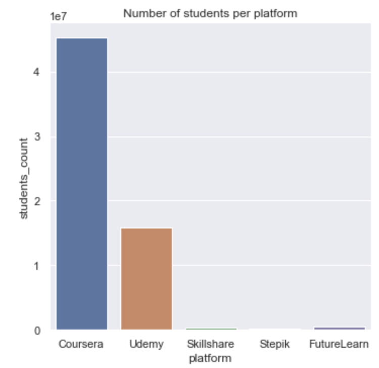
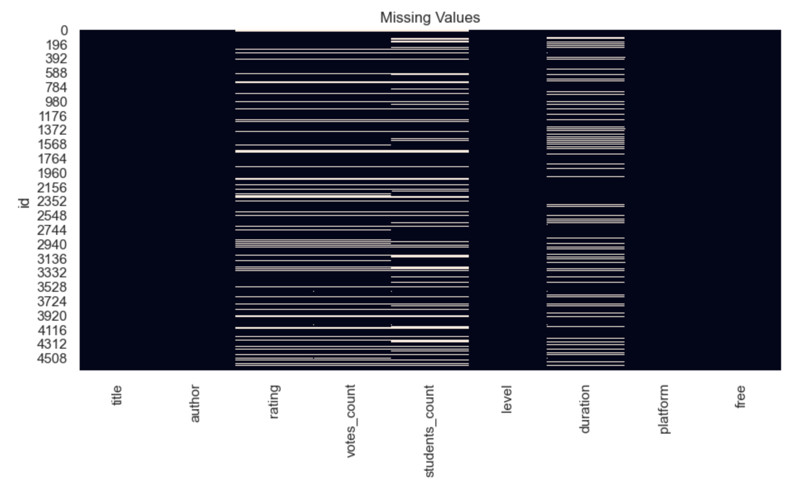
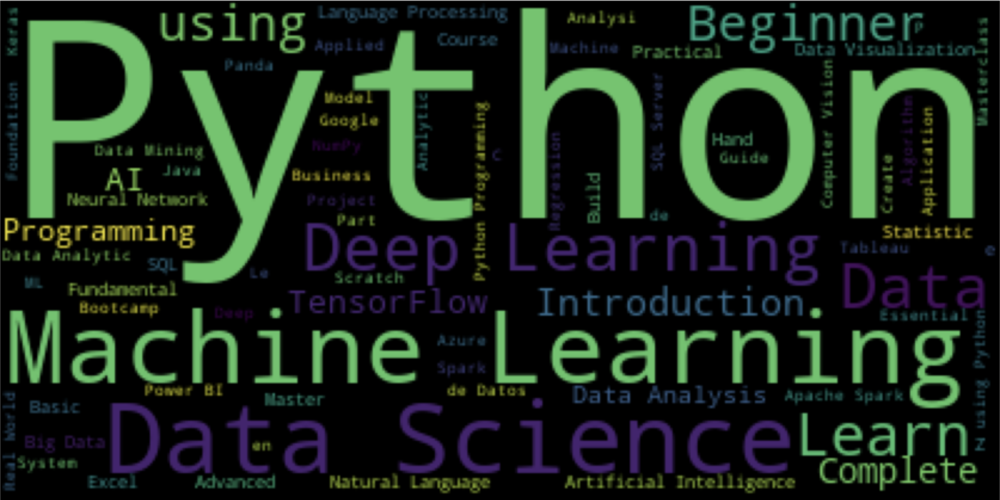

Online data courses
Data project
As part of my work-study program, my host company offered to choose my subjects for my second year. One of the subjects I chose was data science. After a self-training phase, I started my first analysis.
It was about online courses for learning data science.
Data from Kaggle



This project was an opportunity to apply what I had seen on the different MOOCs I had been through. At the end of this work, I was able to highlight the importance of having a method to work with the dataset (cleaning, missing data, representation...).